Galería de Fotos
Conoce algunos de los muebles fabricados y entregados por Comercial Los 2 Hermanos. Descubre nuestros sofás, estantes, tocadores y armarios en diferentes diseños y acabados.
Nuestro Trabajo
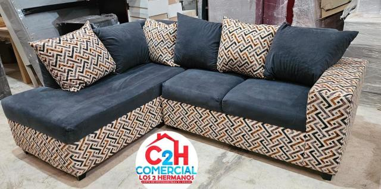
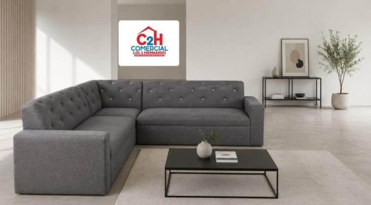
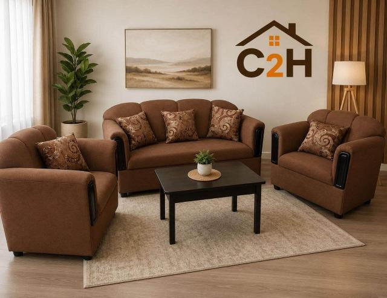
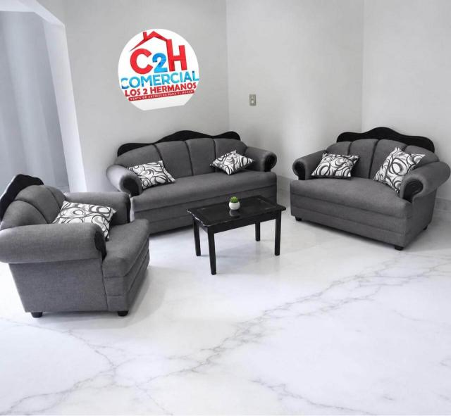
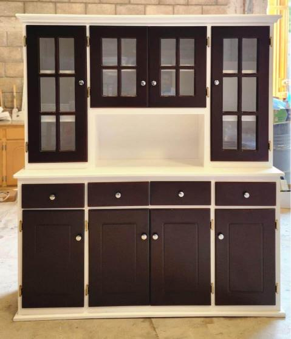
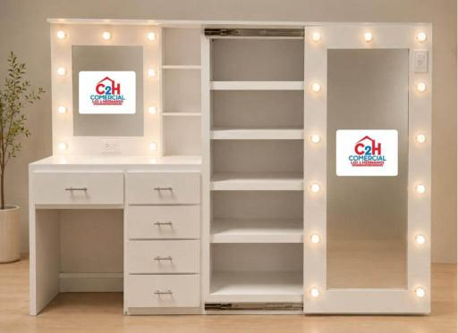
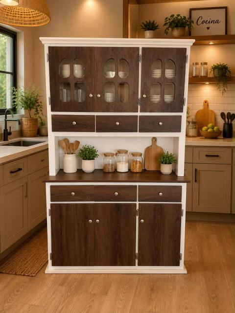
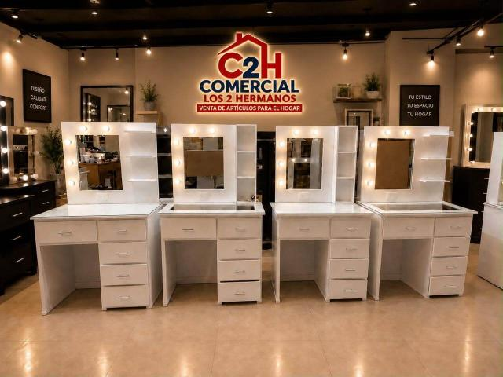
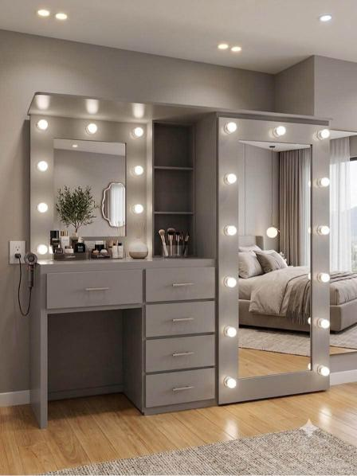
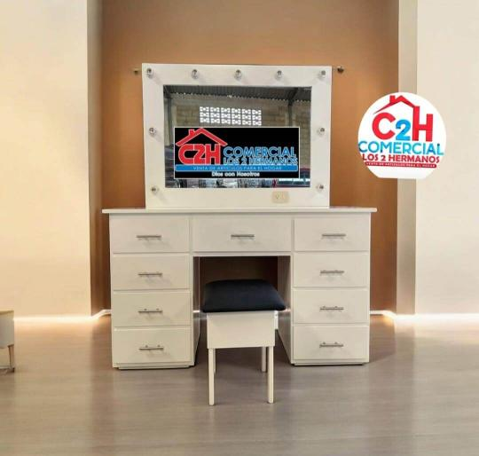
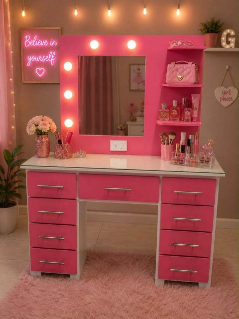
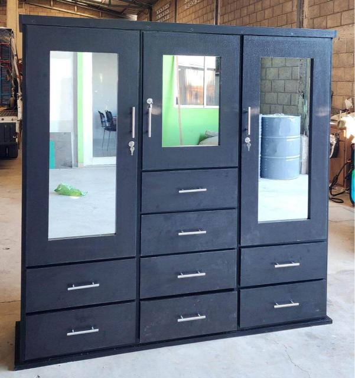
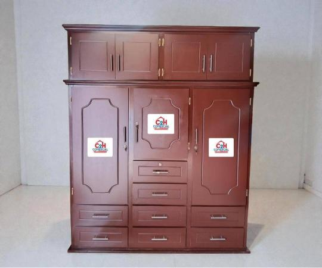
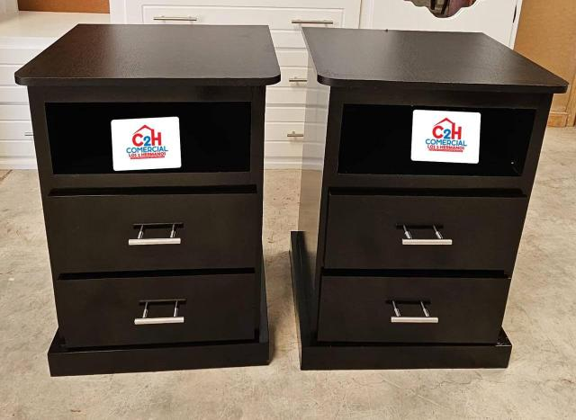
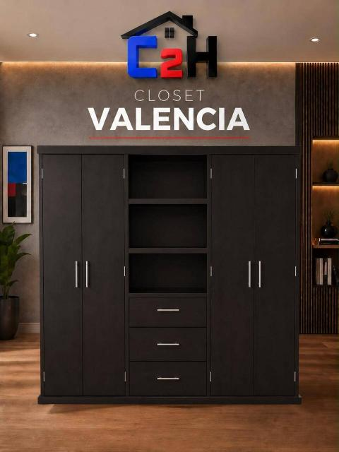
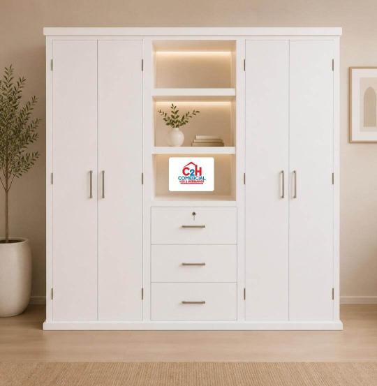
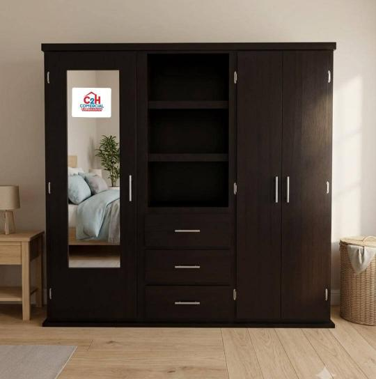
No hay fotos disponibles en esta categoría.